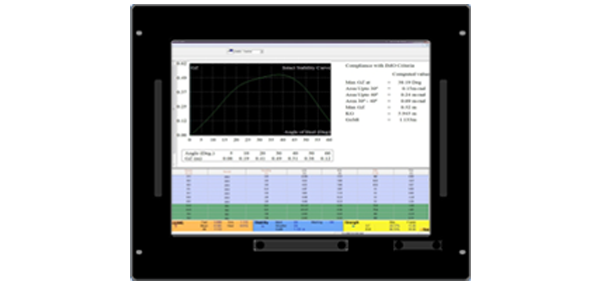

- Can Create & Store New Loading Conditions
- Retrieve and Edit Stored Loading Conditions
- Tank / Hold Filling by Weight, Volume, Percentage and Sounding/Ullage Depth
- Provision for Correction in Sounding due to Trim and Heel
User Defined Parameters for:
- VCG Maximum or VCG from Sounding Table
- FSM Maximum or from Sounding Tables or User Defined
- FSM Maximum or from Sounding Tables or User Defined
- Load line Draft and Excessive Trim
- Maximum permissible VCG exceeding
- Any of the Stability criteria violation
- Propeller Immersion and Minimum Forward Draft
- Permissible Still water Bending moment and Shear force
- Net Tank Top strength
- Audio alarms for criteria violations
- User-defined constraints of Draft, Trim checks
- Special Constraints such as Minimum Ballast Draft, Propeller Immersion
- Draft, Trim, Heel, GoMt, FSM & KG computations
- Displacement & Dead weight calculations
- IMO Intact Stability as per IMO A-749 and compliance comparison

- Wind Heeling Moment calculations as per IMO A-562
- Rolling Period calculations as per IMO A-749
- SF/BM calculation at the prescribed frame
- Comparison with the allowable values
- Shear Force correction at bulkheads
- Graphical display of the calculation results
- Ballast Exchange
- Loading/ Discharging Sequencer
- Autoloader
- URS 17 module (for checking flooded strength and Block Loading Curves)
- Draft Survey to find unknown Weights and to adjust Deadweights.
- Ability to check for multiple (various) Loadline.
- Network version of the software.